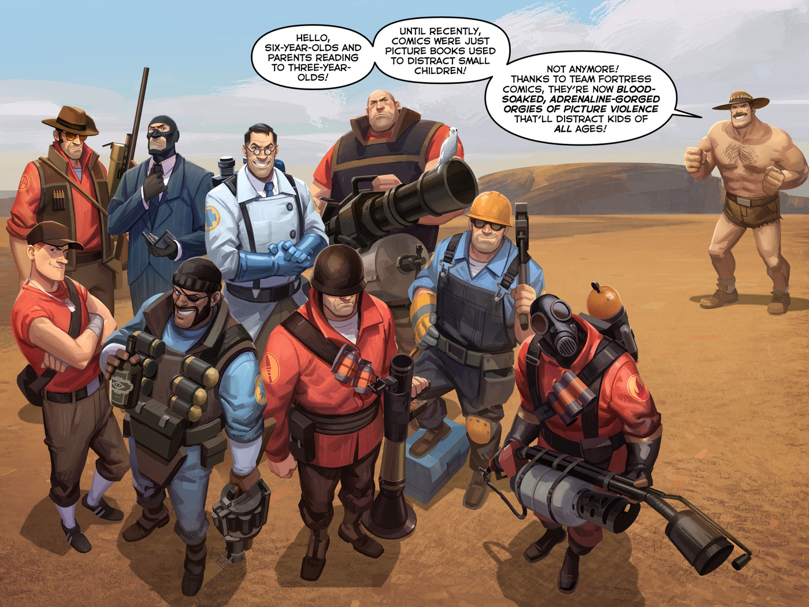

Team Fortress 2 is the long-awaited sequel to what is now referred to as "Team Fortress Classic," donning a cartoon inspired by most pieces of American culture between the 30s and 70s. Packed in this humorously written game is not only a chaotic war against two sides, but also various Source Film Maker (SFM) animations created by Valve and an entire engine for upcoming modders, animators and game developers to play around with completely open-sourced.
TF2 is a game I've found in 2014 when I was starting to branch out of Nintendo games and Minecraft. I've had lots of memories playing the games as well as making new friends through it, whether it be online or in public school. The animations provided by fans like myself make the series feel like a wonderful Saturday-morning cartoon whenever I open up YouTube, wondering: what content am I going to find today? Gameplay-wise, the philosophy behind almost every weapon is that it requires a good amount of accuracy to land each shot, rather than relying on a fully-automated weapon to come across enemies. Despite this, TF2 is definitely not a perfect game with it's features of random-critical-hits, the most controversial topic amongst the community.
The economy of TF2 is one of a kind where players trade and asign value to all cosmetic items dropped by Valve. The intricate and complex nature of TF2's economy makes itself comparable to the likes of Bitcoin, where specific items such as Keys for opening lootcrates, promotional Earbuds cosmetics and metal used to craft other items are used as a form of general currency like a dollar bills and coins would be. Items such as the Golden Australium weapons, hats with unique particle effects and discontinued cosmetics as high up as 50k USD